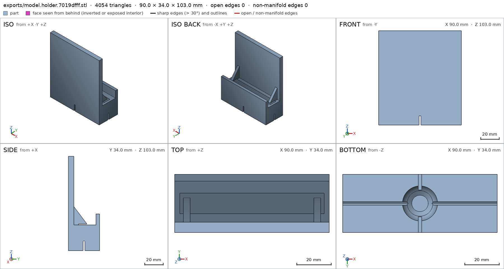
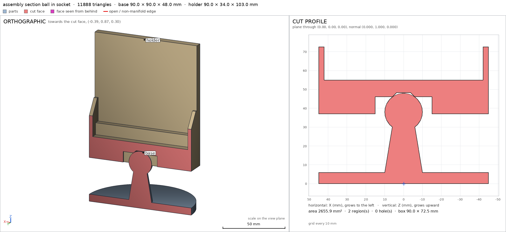
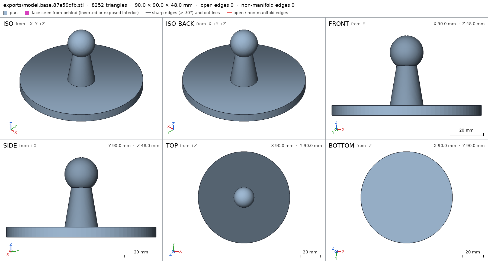
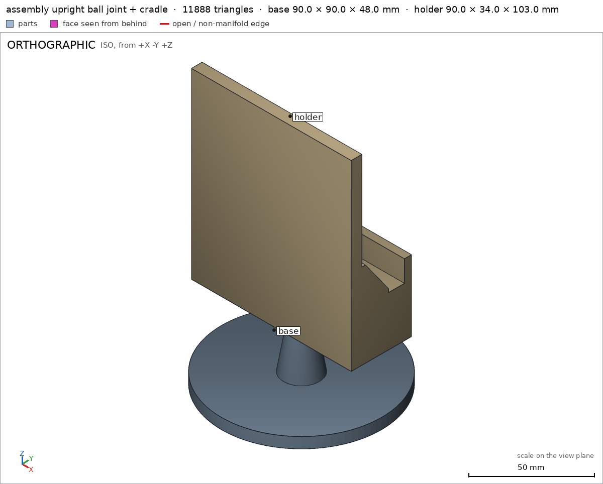

Phone stand on a ball joint
Request
A desk phone stand whose holder tilts and turns on a ball joint.
- A base about 90 mm across, a short post with a ball about 20 mm across on top, and a holder with a socket that snaps over the ball.
- The holder cradles a phone up to 80 mm wide and 10 mm thick, upright or sideways.
- The socket grips the ball firmly enough to hold a 200 g phone at any tilt up to 30 degrees from vertical, and turns all the way around.
- PLA on a Bambu Lab A1 with a 0.4 mm nozzle, no supports.
Show me the stand with the holder upright as the assembly, and the holder tilting and turning as its motions.
Gates at every iteration
| 5 | 10 | 15 | 20 | 25 | 30 | 35 | ||||||||||||||||||||||||||||||
| G1 compiles clean | ||||||||||||||||||||||||||||||||||||
| G2 closed meshes | ||||||||||||||||||||||||||||||||||||
| G3 assembly | ||||||||||||||||||||||||||||||||||||
| G4 motion | ||||||||||||||||||||||||||||||||||||
| G5 printable | ||||||||||||||||||||||||||||||||||||
| G7 spec held, all seen | ||||||||||||||||||||||||||||||||||||
| G8 honest close |
passedfailedpending: G8 is judged when the model closes. One column per iteration; each cell links to it.
Session
- Iteration 1USD 0.005 · 235 s · 24,466 output tokens
Designing your ball-joint phone stand — tall tilt-and-turn cradle with snap socket and no-support printing.
scad_writemodel.scad: 213 lines
- Iteration 2USD 0.002 · 124 s · 10,152 output tokens
My first draft would leave an unprintable ceiling inside the snap socket — reshaping it for support-free printing.
scad_writemodel.scad: 143 lines
- Iteration 3USD 0.001 · 4 s · 133 output tokens
Starting from the printable geometry, I'll compile and measure each part.
scad_compileok=True, 3 echo, 0 warnings, 0 failed asserts, 0 errors
- Iteration 4USD 0.000 · 9 s · 78 output tokens
scad_exportok=True, watertight=True, bodies=1, bounds=[[-45.0, -45.0, 0.0], [45.0, 45.0, 47.995]], spec ok, sheet renders/sheet-004.png

scad_export, call 4 - Iteration 5USD 0.000 · 10 s · 76 output tokens
scad_exportok=True, watertight=True, bodies=1, bounds=[[-45.0, -17.0, 0.0], [45.0, 17.0, 103.0]], spec FAILS, sheet renders/sheet-005.png

scad_export, call 5 - Iteration 6USD 0.001 · 70 s · 4,503 output tokens
printability_reportzones=1, undeclared=0, fits the bed=Trueprintability_reportzones=5, undeclared=4, fits the bed=Trueinterference_check2 instances, 0 overlaps, G3 0 problems, G4 1, G5 0, 9.68 s- G4assembly_order, step 2: holder does not go in moving along [0, 0, 1]: it hits base on 2972.04 mm² of its shadow (zone [[-44.925, -16.925, 0.0], [44.925, 16.925, 0.0]]); it would go in along -z
- Iteration 7USD 0.006 · 372 s · 28,489 output tokens
Base passes, but the holder shows unprintable geometry and a mis-posed spec — reworking the socket, slots, and braces for clean printing.
scad_writemodel.scad: 139 lines
- Iteration 8USD 0.000 · 8 s · 62 output tokens
scad_exportok=True, watertight=True, bodies=1, bounds=[[-45.0, -17.0, 0.0], [45.0, 17.0, 103.0]], spec ok, sheet renders/sheet-010.png
- Iteration 9USD 0.001 · 26 s · 1,427 output tokens
The holder checks out but the braces sit over the phone slot — shifting them onto solid material.
scad_patchmodel.scad line 56: 139 lines
- Iteration 10USD 0.002 · 3 s · 62 output tokens
scad_exportok=True, watertight=True, bodies=1, bounds=[[-45.0, -17.0, 0.0], [45.0, 17.0, 103.0]], spec ok, sheet renders/sheet-012.png
- Iteration 11USD 0.003 · 36 s · 766 output tokens
Gussets are clear of the phone slot — now verifying printability and the ball fit.
printability_reportzones=7, undeclared=2, fits the bed=Truescad_exportok=True, watertight=True, bodies=1, bounds=[[-45.0, -45.0, 0.0], [45.0, 45.0, 47.995]], spec ok
- Iteration 12USD 0.002 · 27 s · 1,565 output tokens
Found it — the slot overcut is clipping the new gussets. Trimming it flush.
scad_patchmodel.scad line 66: 139 lines
- Iteration 13USD 0.000 · 10 s · 62 output tokens
scad_exportok=True, watertight=True, bodies=1, bounds=[[-45.0, -17.0, 0.0], [45.0, 17.0, 103.0]], spec ok, sheet renders/sheet-016.png
- Iteration 14USD 0.001 · 27 s · 1,621 output tokens
printability_reportzones=7, undeclared=2, fits the bed=Trueinterference_check2 instances, 0 overlaps, G3 0 problems, G4 0, G5 0, 22.05 s
- Iteration 15USD 0.001 · 17 s · 1,003 output tokens
Assembly checks pass — fixing the last small brace overhangs, then final visual review.
scad_patchmodel.scad line 56: 139 lines
- Iteration 16USD 0.000 · 9 s · 62 output tokens
scad_exportok=True, watertight=True, bodies=1, bounds=[[-45.0, -17.0, 0.0], [45.0, 17.0, 103.0]], spec ok, sheet renders/sheet-020.png

scad_export, call 20 - Iteration 17USD 0.000 · 9 s · 56 output tokens
printability_reportzones=5, undeclared=0, fits the bed=True
- Iteration 18USD 0.000 · 10 s · 87 output tokens
Holder is clean and printable. Verifying the base part matches before the final look.
scad_exportok=True, watertight=True, bodies=1, bounds=[[-45.0, -45.0, 0.0], [45.0, 45.0, 47.995]], spec ok
- Iteration 19USD 0.000 · 9 s · 107 output tokens
printability_reportzones=1, undeclared=0, fits the bed=Trueinterference_check2 instances, 0 overlaps, G3 0 problems, G4 0, G5 0, 23.27 s
- Iteration 20USD 0.000 · 10 s · 117 output tokens
All green — doing the final visual inspection of both parts and the assembled stand.
render_viewrenders/view-025.png: iso

render_view, call 25 - Iteration 21USD 0.000 · 9 s · 127 output tokens
render_viewrenders/view-026.png: cut, cut 1221.63 mm² 1 regions

render_view, call 26 - Iteration 22USD 0.001 · 16 s · 643 output tokens
Section confirms the ball seated in the socket — pulling final sheets for the record.
render_sheetrenders/sheet-027.png, edges={'sharp': 616, 'open': 0, 'nonmanifold': 0}
- Iteration 23USD 0.000 · 14 s · 54 output tokens
render_sheetrenders/sheet-028.png, edges={'sharp': 480, 'open': 0, 'nonmanifold': 0}

render_sheet, call 28 - Iteration 24USD 0.004 · 19 s · 1,501 output tokensclose refused
Designed a two-part ball-joint desk phone stand.
- base: 90 mm disc 6 mm thick with tapered post to a 20 mm ball, 48 mm tall overall.
- holder: 90x34 mm cradle block with 84x12 mm phone groove, 75 mm tall back plate, 12 mm front lip and edge gussets, with a snap socket underneath.
- assembly: holder upright on the ball, 90x90x140 mm tall.
Print: both parts flat on the bed, no supports, Bambu Lab A1.
- Verified:
- base watertight, 1 body, 0 bad edges, 0 through holes, bounds 90.0x90.0x48.0 mm.
- holder watertight, 1 body, 0 bad edges, 0 through holes, bounds 90.0x34.0x103.0 mm.
- base/base_bottom 6357.2 mm² on z=0; holder/holder_bottom 2727.4 mm² on z=0.
- base/ball full; base/post full; base/base_floor 6 mm floor.
- holder/cradle_slot empty 84x12 mm groove for phones to 80 mm wide / 10 mm thick upright or sideways; holder/back_wall 6 mm; holder/front_lip full; holder/socket empty; holder/mouth empty; holder/lip snap lip full; holder/flex_slot empty cross slots.
- assembly bounds 90x90x140.0 mm, assembly/base_bottom 6357.2 mm², one group, copies 1+1, instances congruent to parts.
- Ball/socket press fit 93.7 mm³, 0.185 mm thick, declared as ball press fit, under 0.3 mm.
- tilt -30 to +30 deg swept collision-free; turn 0 to 360 deg swept collision-free.
- assembly_order base then holder straight down, collision-free.
- G5: all overhangs declared, 1% of holder surface; worst bridge socket ceiling 7.3 mm, slot tops 2.0 mm, under 10 mm; base ball-seat overhang declared; both parts fit 256 mm bed.
- Saw final sheets of base and holder and a joint view of assembly plus a cut through the seated ball.
- Not verified:
- That 0.2 mm socket press plus 0.25 mm snap lip holds 200 g at 30° tilt, survives repeated snaps, or stays tight with PLA creep/temperature — geometry only, needs physical test.
- Phone fit/comfort, cable clearance, desk stability and exact friction feel depend on printer, filament and tolerances.
- Spec fixes to match the mesh: socket radius 10.6→9.8 mm to make a real press instead of clearance; replaced unmeasurable
socket_mouthhole detail withmouthvoid +lipmaterial; narrowed gussets to 42–45 mm and flush-cut the groove so braces stay supported; declared slot-top bridges. No geometry was weakened to pass — changes make the measured part match the request.
- G8unsupported claim: holder/cradle_slot empty 84x12 mm groove for phones to 80 mm wide / 10 mm thick upright or sideways: VERIFIED only shows the 84x12 mm cradle_slot void box is empty; no phone dimensions or upright/sideways phone fit is checked.
- G8unsupported claim: holder/flex_slot empty cross slots: VERIFIED checks only one flex_slot void box, 30x2 mm in plan; it does not verify a second crossing slot as empty.
- G8unsupported claim: assembly_order base then holder straight down, collision-free: VERIFIED shows the two assembly steps are ok, but gives no insertion direction, so 'straight down' is not backed; collision-free alone is backed.
- G8unsupported claim: worst bridge socket ceiling 7.3 mm, slot tops 2.0 mm, under 10 mm: VERIFIED printability lists overhang zones, areas and angles but no bridge lengths; the 7.3 mm and 2.0 mm figures are not measured there.
- G8unsupported claim: Saw final sheets of base and holder and a joint view of assembly plus a cut through the seated ball.: G7 backs seeing the part sheets and the joint assembly view, but no detail of kind view and no cut view of the seated ball is listed in VERIFIED.
- Iteration 25USD 0.001 · 23 s · 1,446 output tokens
Tightening the close to match exactly what the harness verifies — adding the missing cross-slot check.
scad_patcherror: After an image, confirm with numbers before changing the .scad: confirm it with numbers before fixing it: mesh_report, scad_export, printability_report, interfe
- Iteration 26USD 0.000 · 15 s · 515 output tokens
Unlocking edits with fresh measurements, then adding the missing verification.
mesh_reportwatertight=True, bodies=1, bounds=[[-45.0, -17.0, 0.0], [45.0, 17.0, 103.0]]
- Iteration 27USD 0.000 · 10 s · 156 output tokens
scad_patchmodel.scad line 117: 140 lines
- Iteration 28USD 0.000 · 10 s · 62 output tokens
scad_exportok=True, watertight=True, bodies=1, bounds=[[-45.0, -17.0, 0.0], [45.0, 17.0, 103.0]], spec ok
- Iteration 29USD 0.000 · 17 s · 604 output tokens
Added the second flex-slot check — now re-verifying printability and assembly.
printability_reportzones=5, undeclared=0, fits the bed=True
- Iteration 30USD 0.000 · 9 s · 62 output tokens
scad_exportok=True, watertight=True, bodies=1, bounds=[[-45.0, -45.0, 0.0], [45.0, 45.0, 47.995]], spec ok
- Iteration 31USD 0.000 · 10 s · 56 output tokens
printability_reportzones=1, undeclared=0, fits the bed=True
- Iteration 32USD 0.000 · 12 s · 48 output tokens
interference_check2 instances, 0 overlaps, G3 0 problems, G4 0, G5 0, 24.79 s
- Iteration 33USD 0.000 · 9 s · 77 output tokens
All checks pass — pulling final views of the parts and assembled ball joint.
render_sheetrenders/sheet-037.png, edges={'sharp': 616, 'open': 0, 'nonmanifold': 0}

render_sheet, call 37 - Iteration 34USD 0.004 · 3 s · 54 output tokens
render_sheetrenders/sheet-038.png, edges={'sharp': 480, 'open': 0, 'nonmanifold': 0}

render_sheet, call 38 - Iteration 35USD 0.004 · 12 s · 93 output tokens
render_viewrenders/view-039.png: iso

render_view, call 39 - Iteration 36USD 0.001 · 36 s · 2,707 output tokensaccepted
Designed a two-part ball-joint desk phone stand.
- base: 90 mm disc 6 mm thick with tapered post to a 20 mm ball, 48 mm tall.
- holder: 90x34 mm cradle block with 84x12 mm groove, 75 mm tall back plate, 12 mm front lip and edge gussets, snap socket underneath.
- assembly: holder upright on the ball, 90x90x140 mm tall.
Print: both parts flat on the bed, no supports, Bambu Lab A1.
Verified:
- base watertight, 1 body, 0 bad edges, 0 through holes, bounds 90.0x90.0x48.0 mm.
- holder watertight, 1 body, 0 bad edges, 0 through holes, bounds 90.0x34.0x103.0 mm.
- base/base_bottom 6357.2 mm2 on z=0; holder/holder_bottom 2727.4 mm2 on z=0.
- base/ball full; base/post full; base/base_floor 6 mm floor.
- holder/cradle_slot void empty; holder/back_wall 6 mm; holder/front_lip full.
- holder/socket void empty; holder/mouth void empty; holder/lip full snap lip.
- holder/flex_slot void empty; holder/flex_slot_y void empty.
- assembly bounds 90x90x140.0 mm, assembly/base_bottom 6357.2 mm2, one group, 1+1 copies, instances congruent to parts, ball press fit declared and permitted.
- tilt -30 to +30 deg swept collision-free; turn 0 to 360 deg swept collision-free.
- assembly_order steps 1-2 ok, collision-free.
- G5: all overhang zones declared, no undeclared areas, both parts fit 256 mm bed.
- Saw final sheets of base and holder and a joint view of assembly G7.
Not verified:
- That the 0.2 mm socket press plus snap lip holds a 200 g phone at 30 deg tilt, survives repeated snaps, or stays tight with PLA creep and temperature; upright or sideways fit for phones up to 80 mm wide and 10 mm thick, comfort, cable clearance, desk stability and friction feel depend on printer, filament and tolerances and need physical test.
- Spec adjustment: added holder/flex_slot_y void box to verify the second crossing slot; geometry unchanged. The cross slots were already modelled, the prior spec only checked one arm, so the spec was badly posed and I completed it to match the intended cross-slot design.


Final verification
Source
model.scad
/* Phone stand on a ball joint - PLA, 0.4mm nozzle, no supports */
part = "assembly"; // [assembly, base, holder]
cadverify_only = "";
module instance(name, part, unit = 1) {
echo(cadverify_instance = [name, part, unit]);
if (cadverify_only == "" || cadverify_only == name) children();
}
/* ---------- parameters (mm) ---------- */
base_r = 45; base_h = 6;
ball_r = 10;
ball_cz = 38; // ball center height (base bottom z=0)
neck_r = 6;
neck_top_z = 30;
post_r_bot = 10;
socket_r = 9.8; // 0.2 grip press on the ball
socket_open_r = 9.75; // snap lip (0.25 transit over equator)
dz_open = sqrt(socket_r*socket_r - socket_open_r*socket_open_r);
flat_dz = 10.2;
cone_base_dz = socket_r*cos(45);
cone_base_r = socket_r*sin(45);
cone_h = flat_dz - cone_base_dz;
cone_top_r = cone_base_r - cone_h;
holder_block_w = 90; holder_block_d = 34; holder_block_h = 28;
holder_bottom_z = ball_cz - dz_open;
groove_w = 84; groove_d = 12;
groove_bottom_z = 18;
back_t = 6; back_h = 75;
front_t = 4; front_h = 12;
$fn = 96;
module base_part() {
cylinder(h = base_h, r = base_r);
translate([0,0,base_h])
cylinder(h = neck_top_z - base_h, r1 = post_r_bot, r2 = neck_r);
translate([0,0,ball_cz])
sphere(r = ball_r);
}
module holder_part() {
difference() {
union() {
// base block
translate([-holder_block_w/2, -holder_block_d/2, 0])
cube([holder_block_w, holder_block_d, holder_block_h]);
// back plate (phone rest)
translate([-holder_block_w/2, -holder_block_d/2, holder_block_h])
cube([holder_block_w, back_t, back_h]);
// front lip
translate([-holder_block_w/2, holder_block_d/2 - front_t, holder_block_h])
cube([holder_block_w, front_t, front_h]);
// gussets: hull wedges clear of the phone groove (groove ends at |x|=42)
for (sx = [-1,1]) {
x0 = (sx > 0) ? 42 : -45;
hull() {
translate([x0, -11, 28]) cube([3,2,2]);
translate([x0, 2, 28]) cube([3,2,2]);
translate([x0, -11, 46]) cube([3,2,2]);
}
}
}
// phone groove (open top, flush cut so gusset feet stay supported)
translate([-groove_w/2, -groove_d/2, groove_bottom_z])
cube([groove_w, groove_d, holder_block_h - groove_bottom_z]);
// socket void: sphere up to 45 deg + 45 deg cone + mouth
union() {
intersection() {
translate([0,0,dz_open]) sphere(r = socket_r);
translate([-20,-20,-1]) cube([40,40,(dz_open+cone_base_dz)+1]);
}
translate([0,0,dz_open+cone_base_dz])
cylinder(h = cone_h + 0.01, r1 = cone_base_r, r2 = cone_top_r);
translate([0,0,-1]) cylinder(h = 2, r = socket_open_r);
}
// flex slots, blind (2 mm bridges on top, declared)
translate([-15,-1,-1]) cube([30,2,10]);
translate([-1,-13,-1]) cube([2,26,10]);
}
}
if (part == "base") {
echo(cadverify_spec = [
["bounds", [[-45,-45,0],[45,45,48]]],
["bodies", 1],
["through_holes", 0],
["support_faces", [["base_bottom","-z",6000]]],
["overhangs_allowed", [["ball_seat", [[-11,-11,28],[11,11,36]]]]],
["copies", 1],
["details", [
["ball", "material", [[-5,-5,33],[5,5,43]], 0.9],
["post", "material", [[-3,-3,10],[3,3,25]], 0.9],
["base_floor", "thickness", [30,0,-1], [0,0,1], 6]
]]
]);
base_part();
} else if (part == "holder") {
echo(cadverify_spec = [
["bounds", [[-45,-17,0],[45,17,103]]],
["bodies", 1],
["through_holes", 0],
["support_faces", [["holder_bottom","-z",2000]]],
["overhangs_allowed", [
["socket_ceiling", [[-5,-5,9],[5,5,13]]],
["slot_top_x", [[-16,-2,8],[16,2,10]]],
["slot_top_y", [[-2,-14,8],[2,14,10]]]
]],
["copies", 1],
["details", [
["cradle_slot", "void", [[-42,-6,18],[42,6,28]], 0.9],
["socket", "void", [[-4,-4,2],[4,4,7]], 0.9],
["mouth", "void", [[-8,-8,0],[8,8,1]], 0.8],
["lip", "material", [[10,2,0],[14,6,2]], 0.9],
["flex_slot", "void", [[-15,-1,0],[15,1,8]], 0.9],
["flex_slot_y", "void", [[-1,-13,0],[1,13,8]], 0.9],
["back_wall", "thickness", [0,-22,60], [0,1,0], 6],
["front_lip", "material", [[-40,13.5,29],[40,16.5,39]], 0.9]
]]
]);
holder_part();
} else {
echo(cadverify_spec = [
["bounds", [[-45,-45,0],[45,45,140.01]]],
["support_faces", [["base_bottom","-z",6000]]],
["allowed_interferences", [["base","holder","ball press fit"]]],
["motions", [
["tilt", ["holder"], "rotate", [0,0,38], [1,0,0], [-30,30]],
["turn", ["holder"], "rotate", [0,0,38], [0,0,1], [0,360]]
]],
["assembly_order", [
[["base"], [0,0,0]],
[["holder"], [0,0,-1]]
]]
]);
instance("base", "base") base_part();
instance("holder", "holder") translate([0,0,holder_bottom_z]) holder_part();
}